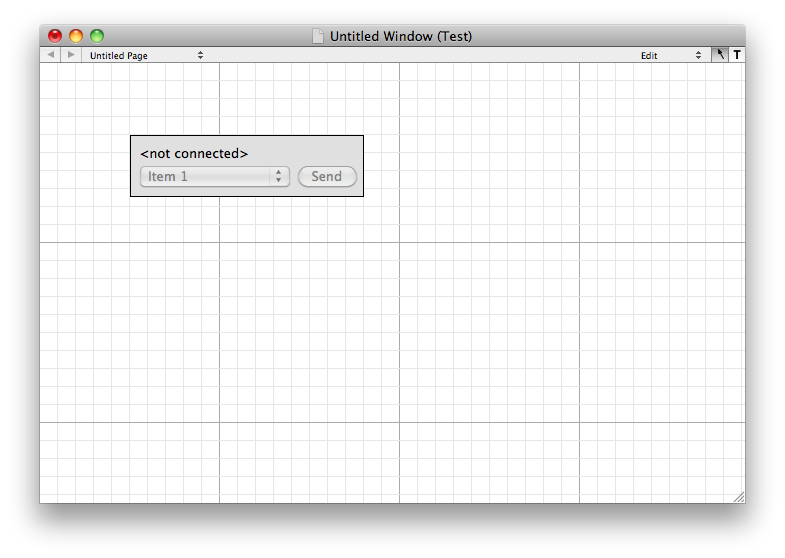
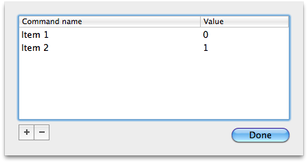

The Popup menu allows you to associate an integer with a text string in a popup menu.
From the tools menu drag the PopUpMenu item onto the window then drag a command on top of it. Configure the menu by adding items and associated numbers. You add items with the + button and remove them with the - button.
 